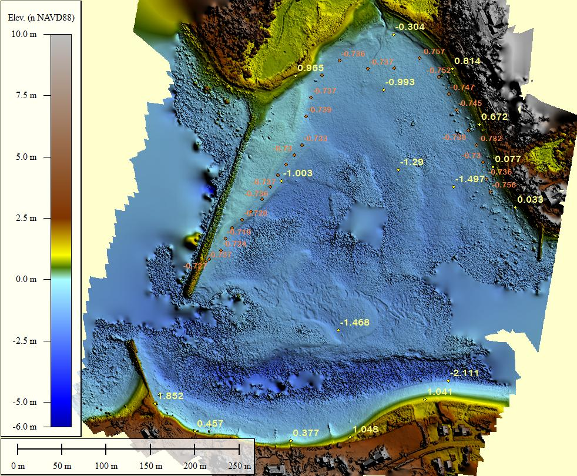
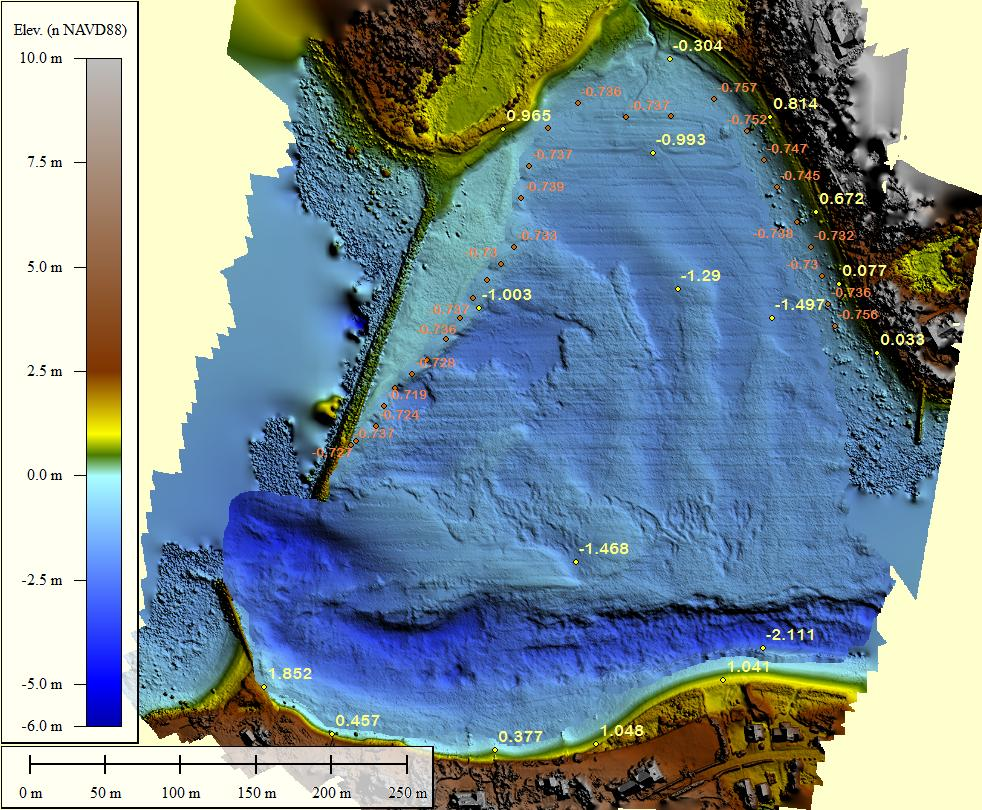

West Falmouth Harbor, April 24, 2017
These images are an orthophoto mosiac made using photogrammetry with images from an unmanned aerial system (drone) flown at low tide on April 24, 2017, and bathymetry measured with a bathymetric side-scan sonar from an autonomous surface vehicle (Jetyak) at high tide later the same day. Ucorrected refraction effects make the photogrammetry depths about 10% too shallow.
The jQuery BeforeAfter plugin allows you to take two images and merge them so that a visitor can drag a slider over them to visually compare them.
Grab and drag the green handle to compare images.

